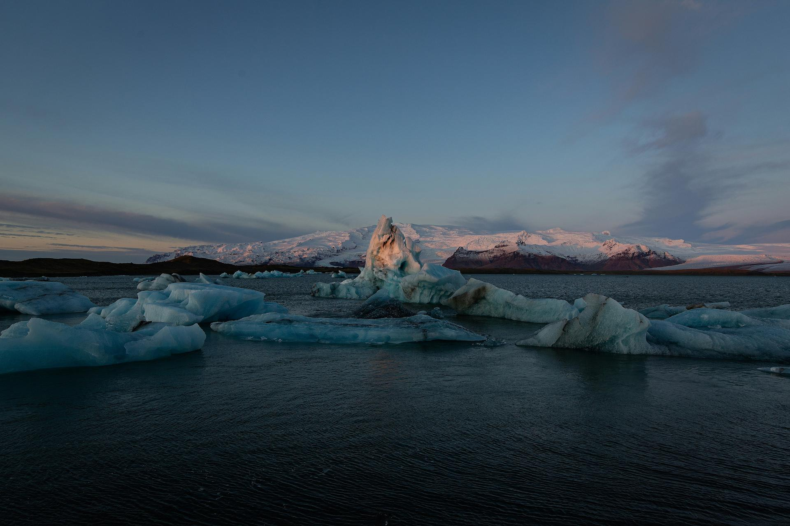
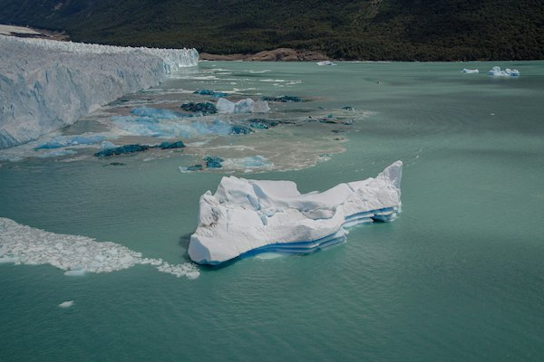
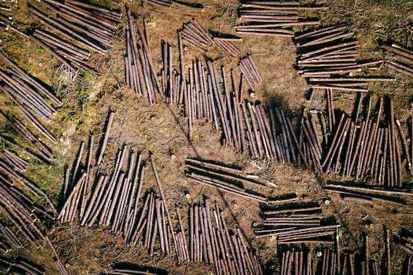
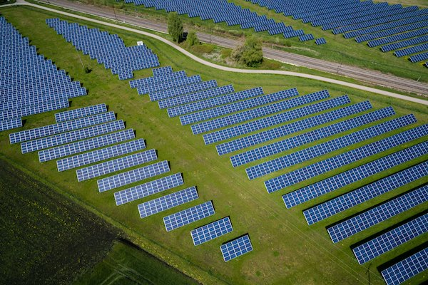

O planeta está pedindo socorro. Você vai ouvir?
O clima da Terra está mudando em velocidade alarmante. Temperaturas extremas, enchentes, secas e incêndios são sinais de um planeta em desequilíbrio. A boa notícia: ainda dá tempo de agir.
Urgência
O que está acontecendo com o nosso planeta?

O clima está mudando
A temperatura média da Terra já aumentou mais de 1°C nos últimos 100 anos. Isso pode parecer pouco, mas está causando eventos extremos cada vez mais frequentes — secas, inundações, ondas de calor e tempestades que afetam milhões de pessoas todos os anos.

Os sinais estão em todo lugar
Geleiras derretendo, oceanos aquecendo, espécies desaparecendo e estações do ano fora do ritmo. O que antes era raro está se tornando comum. O desequilíbrio ambiental já afeta a produção de alimentos, o acesso à água e a saúde de populações inteiras.

Mas ainda podemos mudar
Países, cidades e pessoas ao redor do mundo já estão agindo. Energia limpa, reflorestamento, consumo consciente e políticas ambientais estão provando que é possível reverter parte dos danos — se agirmos juntos e com urgência.